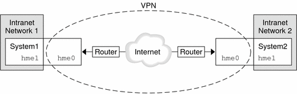

Previous
Previous
Virtual Private Networks and IPsec
A configured tunnel is a point-to-point interface. The tunnel enables one IP packet to be encapsulated within another IP packet. A correctly configured tunnel requires both a tunnel source and a tunnel destination. For more information, see the tun(7M) man page and Configuring Tunnels for IPv6 Support.
A tunnel creates an apparent physical interface to IP. The physical link's integrity depends on the underlying security protocols. If you set up the security associations (SAs) securely, then you can trust the tunnel. Packets that exit the tunnel must have originated from the peer that was specified in the tunnel destination. If this trust exists, you can use per-interface IP forwarding to create a virtual private network (VPN).
You can use IPsec to construct a VPN. IPsec secures the connection. For example, an organization that uses VPN technology to connect offices with separate networks can deploy IPsec to secure traffic between the two offices.
The following figure illustrates how two offices use the Internet to form their VPN with IPsec deployed on their network systems.
Figure 19-7 Virtual Private Network
For a detailed example of the setup procedure, see How to Protect a VPN With an IPsec Tunnel in Tunnel Mode Over IPv4. For IPv6 networks, see How to Protect a VPN With an IPsec Tunnel in Tunnel Mode Over IPv6.
IPsec and NAT Traversal
IKE can negotiate IPsec SAs across a NAT box. This ability enables systems to securely connect from a remote network, even when the systems are behind a NAT device. For example, employees who work from home, or who log on from a conference site can protect their traffic with IPsec.
NAT stands for network address translation. A NAT box is used to translate a private internal address into a unique Internet address. NATs are very common at public access points to the Internet, such as hotels. For a fuller discussion, see Using Solaris IP Filter's NAT Feature.
The ability to use IKE when a NAT box is between communicating systems is called NAT traversal, or NAT-T. In the Solaris 10 release, NAT-T has the following limitations:
NAT-T works on IPv4 networks only.
NAT-T cannot take advantage of the IPsec ESP acceleration provided by the Sun Crypto Accelerator 4000 board. However, IKE acceleration with the Sun Crypto Accelerator 4000 board works.
The AH protocol depends on an unchanging IP header, therefore AH cannot work with NAT-T. The ESP protocol is used with NAT-T.
The NAT box does not use special processing rules. A NAT box with special IPsec processing rules might interfere with the implementation of NAT-T.
NAT-T works only when the IKE initiator is the system behind the NAT box. An IKE responder cannot be behind a NAT box unless the box has been programmed to forward IKE packets to the appropriate individual system behind the box.
The following RFCs describe NAT functionality and the limits of NAT-T. Copies of the RFCs can be retrieved from http://www.rfc-editor.org.
RFC 3022, "Traditional IP Network Address Translator (Traditional NAT)," January 2001
RFC 3715, "IPsec-Network Address Translation (NAT) Compatibility Requirements," March 2004
RFC 3947, "Negotiation of NAT-Traversal in the IKE," January 2005
RFC 3948, "UDP Encapsulation of IPsec Packets," January 2005
To use IPsec across a NAT, see Configuring IKE for Mobile Systems (Task Map).
IPsec and SCTP
The Solaris 10 release supports the Streams Control Transmission Protocol (SCTP). The use of the SCTP protocol and SCTP port number to specify IPsec policy is supported, but is not robust. The IPsec extensions for SCTP as specified in RFC 3554 are not yet implemented. These limitations can create complications in creating IPsec policy for SCTP.
SCTP can make use of multiple source and destination addresses in the context of a single SCTP association. When IPsec policy is applied to a single source or a single destination address, communication can fail when SCTP switches the source or the destination address of that association. IPsec policy only recognizes the original address. For information about SCTP, read the RFCs and SCTP Protocol.
IPsec and Solaris Zones
IPsec is configured from the global zone. The IPsec policy configuration file, ipsecinit.conf, exists in the global zone only. The file can have entries that apply to non-global zones, as well as entries that apply to the global zone. For information on how to use IPsec with zones, see Protecting Traffic With IPsec. For information about zones, see Chapter 16, "Introduction to Solaris Zones," in System Administration Guide: Solaris Containers-Resource Management and Solaris Zones.
IPsec Utilities and Files
Table 19-3 describes the files and commands that are used to configure and manage IPsec. For completeness, the table includes key management files and commands.
For instructions on implementing IPsec on your network, see Protecting Traffic With IPsec (Task Map).
For more details about IPsec utilities and files, see Chapter 21, IP Security Architecture (Reference).
Table 19-3 List of Selected IPsec Files and Commands
IPsec Utility or File | Description | Man Page |
|---|---|---|
/etc/inet/ipsecinit.conf file | IPsec policy file. If this file exists, IPsec is activated at boot time. | ipsecconf(1M) |
ipsecconf command | IPsec policy command. The boot scripts use ipsecconf to read the /etc/inet/ipsecinit.conf file and activate IPsec. Useful for viewing and modifying the current IPsec policy, and for testing. | ipsecconf(1M) |
PF_KEY socket interface | Interface for security associations database (SADB). Handles manual key management and automatic key management. | pf_key(7P) |
ipseckey command | IPsec security associations (SAs) keying command. ipseckey is a command-line front end to the PF_KEY interface. ipseckey can create, destroy, or modify SAs. | ipseckey(1M) |
/etc/inet/secret/ipseckeys file | Keys for IPsec SAs. If the ipsecinit.conf file exists, the ipseckeys file is automatically read at boot time. | |
ipsecalgs command | IPsec algorithms command. Useful for viewing and modifying the list of IPsec algorithms and their properties. | ipsecalgs(1M) |
/etc/inet/ipsecalgs file | Contains the configured IPsec protocols and algorithm definitions. This file is managed by the ipsecalgs utility and must never be edited manually. | |
/etc/inet/ike/config file | IKE configuration and policy file. If this file exists, the IKE daemon, in.iked, provides automatic key management. The management is based on rules and global parameters in the /etc/inet/ike/config file. See IKE Utilities and Files. | ike.config(4) |
Changes to IPsec for the Solaris 10 Release
For a complete listing of new Solaris features and a description of Solaris releases, see Solaris Express, Developer Edition What's New. Since the Solaris 9 release, IPsec includes the following functionality:
When a Sun Crypto Accelerator 4000 board is attached, the board automatically caches IPsec SAs for packets that use the board's Ethernet interface. The board also accelerates the processing of the IPsec SAs.
IPsec can take advantage of automatic key management with IKE over IPv6 networks. For more information, see Chapter 22, Internet Key Exchange (Overview).
For new IKE features, see Changes to IKE for the Solaris 10 Release.
The parser for theipseckey command provides clearer help. The ipseckey monitor command timestamps each event. For details, see the ipseckey(1M) man page.
IPsec algorithms now come from a central storage location, the Solaris cryptographic framework. The ipsecalgs(1M) man page describes the characteristics of the algorithms that are available. The algorithms are optimized for the architecture that they run on. For a description of the framework, see Chapter 12, "Solaris Cryptographic Framework (Overview)," in System Administration Guide: Security Services.
IPsec works in the global zone. IPsec policy is managed in the global zone for a non-global zone. Keying material is created and is managed manually in the global zone for a non-global zone. IKE cannot be used to generate keys for a non-global zone. For more information on zones, see Chapter 16, "Introduction to Solaris Zones," in System Administration Guide: Solaris Containers-Resource Management and Solaris Zones.
IPsec policy can work with the Streams Control Transmission Protocol (SCTP) and SCTP port number. However, the implementation is not complete. The IPsec extensions for SCTP that are specified in RFC 3554 are not yet implemented. These limitations can cause complications when creating IPsec policy for SCTP. For details, consult the RFCs. Also, read IPsec and SCTP and SCTP Protocol.
IPsec and IKE can protect traffic that originates behind a NAT box. For details and limitations, see IPsec and NAT Traversal. For procedures, see Configuring IKE for Mobile Systems (Task Map).